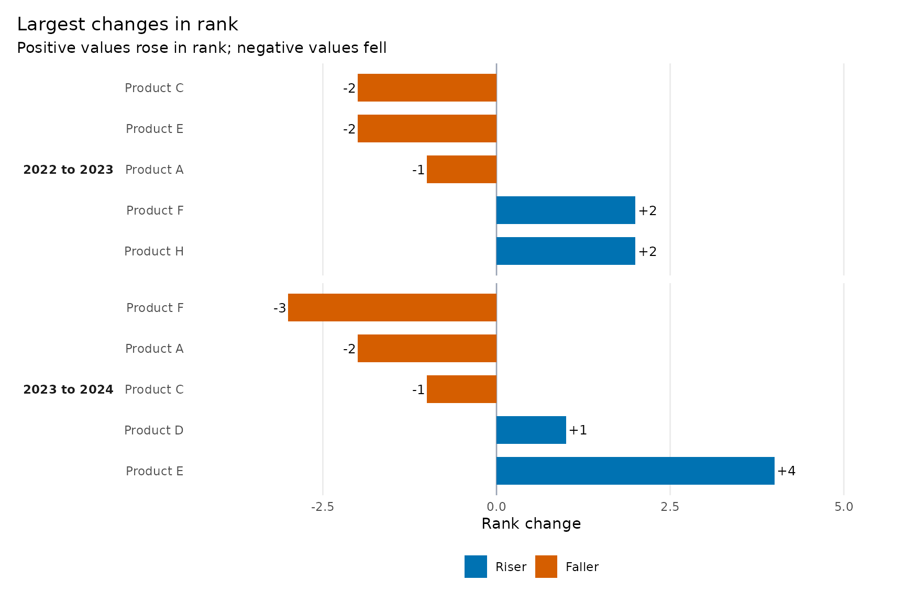
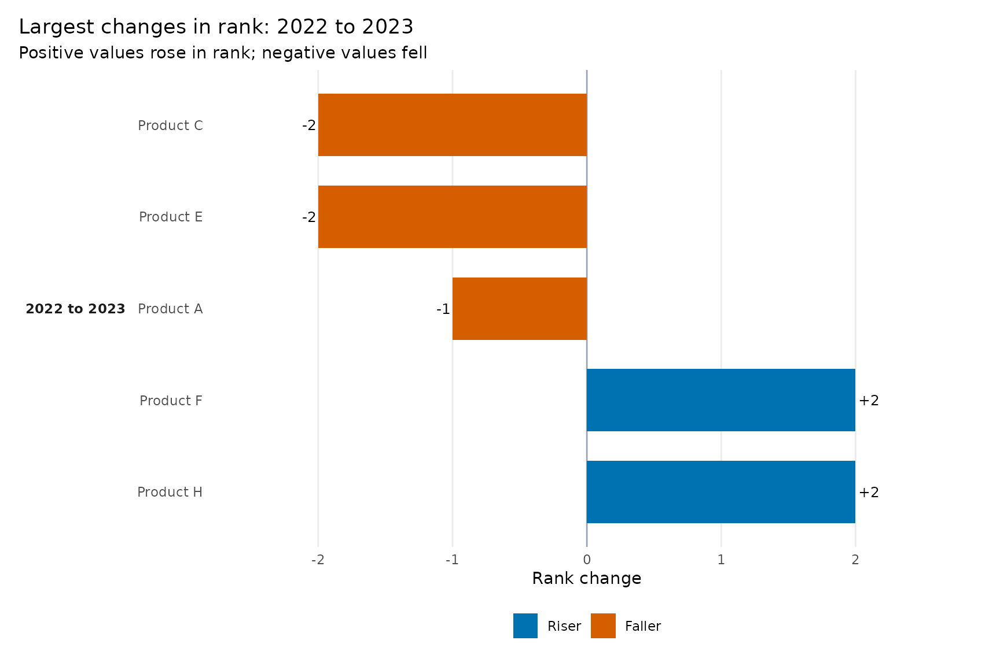
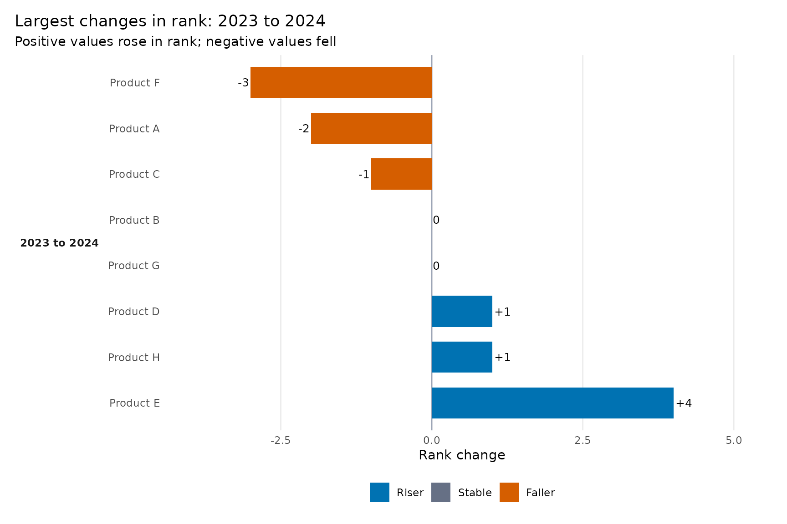
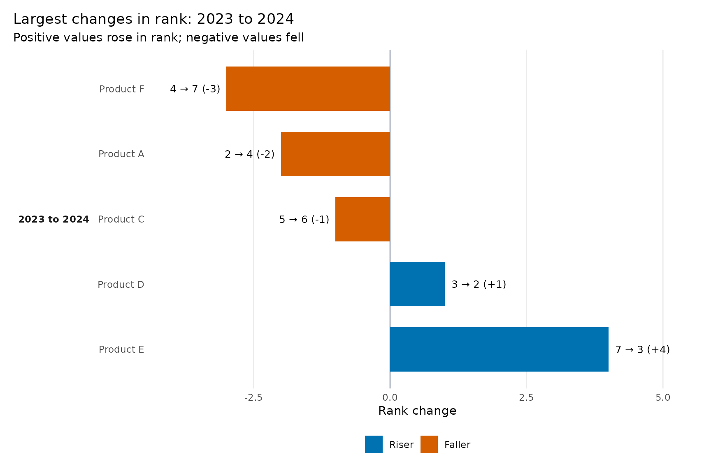
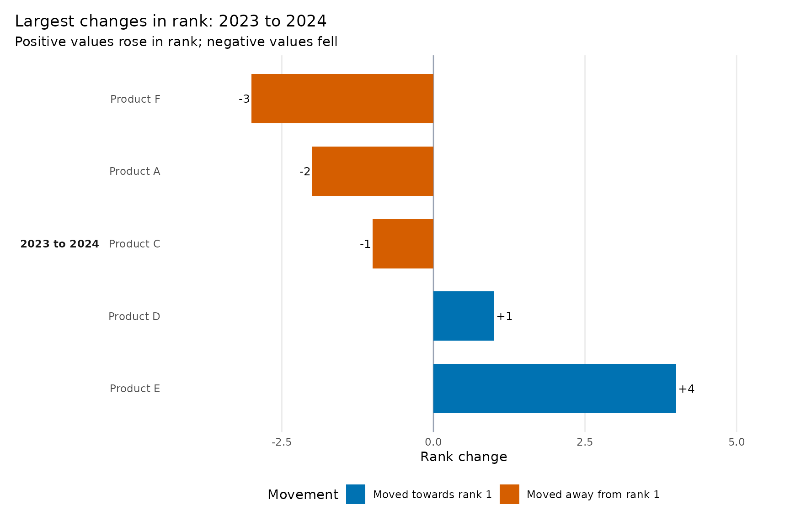
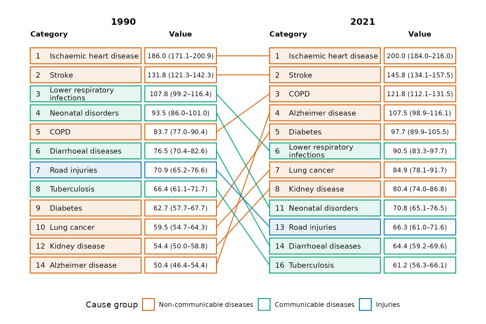

Rank changes, movement status, and legends
Source:vignettes/movement-status-and-legends.Rmd
movement-status-and-legends.Rmdggrank has two primary visual questions:
-
ggrank()asks How did the ranking evolve? -
ggrank_change()asks Who moved the most?
Both use the same ranks. The change chart is not a second ranking algorithm.
How rank change is calculated
For each adjacent comparison:
rank_change = rank_from - rank_toRank 7 to rank 3 is +4: the category rose four
positions. Rank 2 to rank 5 is -3: it fell three positions.
Rank 3 to rank 3 is zero. Competition ties remain statistical ties;
display_position only prevents tied categories from
overlapping in ggrank().
library(ggrank)
changes <- ggrank_table(
ggrank_products, product, year, sales,
top_n = 5,
show_transitions = "all"
)
changes[c("category", "from", "to", "rank_from", "rank_to",
"rank_change", "status")]
#> category from to rank_from rank_to rank_change status
#> 1 Product B 2022 2023 2 1 1 riser
#> 2 Product A 2022 2023 1 2 -1 faller
#> 3 Product D 2022 2023 4 3 1 riser
#> 4 Product F 2022 2023 6 4 2 entrant
#> 5 Product C 2022 2023 3 5 -2 faller
#> 6 Product H 2022 2023 8 6 2 riser
#> 7 Product E 2022 2023 5 7 -2 exit
#> 8 Product G 2022 2023 7 8 -1 faller
#> 9 Product B 2023 2024 1 1 0 stable
#> 10 Product D 2023 2024 3 2 1 riser
#> 11 Product E 2023 2024 7 3 4 entrant
#> 12 Product A 2023 2024 2 4 -2 faller
#> 13 Product H 2023 2024 6 5 1 entrant
#> 14 Product C 2023 2024 5 6 -1 exit
#> 15 Product F 2023 2024 4 7 -3 exit
#> 16 Product G 2023 2024 8 8 0 stableWhat each status means
ggrank_table() preserves boundary and data-availability
information:
| Status | Meaning |
|---|---|
riser |
Rank improved and the category did not cross into the selected top N. |
faller |
Rank worsened and the category did not cross out of the selected top N. |
stable |
Statistical rank did not change. |
entrant |
Moved from outside the top-N boundary to inside it. |
exit |
Moved from inside the top-N boundary to outside it. |
new |
No earlier-period rank is available. |
absent |
No later-period rank is available. |
missing |
A non-finite value was supplied for either side. |
The ggrank_change() colour is intentionally simpler. It
uses the sign of rank_change: an entrant moving 6 to 4 is
shown as a riser; an exit moving 3 to 7 is shown as a faller. The
original status remains in the plot data.
Latest, all, and explicit comparisons
The default focuses on the latest consecutive comparison and removes stable categories:
ggrank_change(changes, top = 5)top = 5 means the five largest absolute rank changes in
the selected comparison—not five risers plus five fallers.
ggrank_change(changes, top = 5, comparison = "all")
Select a comparison already represented in the table with
from and to:
ggrank_change(changes, from = 2022, to = 2023, top = 5)
Stable categories are optional:
ggrank_change(changes, top = 8, show_stable = TRUE)
#> Warning: Removed 2 rows containing missing values or values outside the scale range
#> (`geom_point()`).
Detailed labels and long names
ggrank_change(
changes,
top = 5,
change_label = "ranks",
label_wrap = 24
)
Use change_label = "change" for +4 and
-3, "ranks" for 7 → 3 (+4), or
"none" for no bar-end annotation.
Customise movement colours and legend text
movement_colours <- c(
riser = "#0072B2",
faller = "#D55E00",
stable = "#667085"
)
movement_labels <- c(
riser = "Moved towards rank 1",
faller = "Moved away from rank 1",
stable = "No rank change"
)
ggrank_change(
changes,
top = 5,
palette = movement_colours,
legend_title = "Movement",
legend_labels = movement_labels
)
Set show_legend = FALSE when direction, labels, and
explanatory text make the legend unnecessary. Because the result is a
ggplot, standard scale and theme functions remain available for further
refinement.
Customise group legends in ggrank()
When group is supplied, colour_by = "auto"
uses its values. Palette and legend-label names must match those values
exactly.
cause_colours <- c(
"Communicable" = "#009E73",
"Injuries" = "#0072B2",
"Non-communicable" = "#D55E00"
)
cause_labels <- c(
"Communicable" = "Communicable diseases",
"Injuries" = "Injuries",
"Non-communicable" = "Non-communicable diseases"
)
ggrank(
ggrank_causes, cause, year, rate,
rank = rank, label = display_value, group = cause_group,
periods = c(1990, 2021), top_n = 10,
palette = cause_colours,
legend_title = "Cause group",
legend_labels = cause_labels
)
To use movement rather than group colours, choose
colour_by = "movement". To hide the legend, use
show_legend = FALSE.
For a chart containing three or four periods, movement colour in
ggrank() is a summary of the net movement between the first
and last displayed period. A category can therefore fall and later
recover while finishing with a stable net rank. Use
ggrank_change(comparison = "all") when the individual
adjacent changes are important.